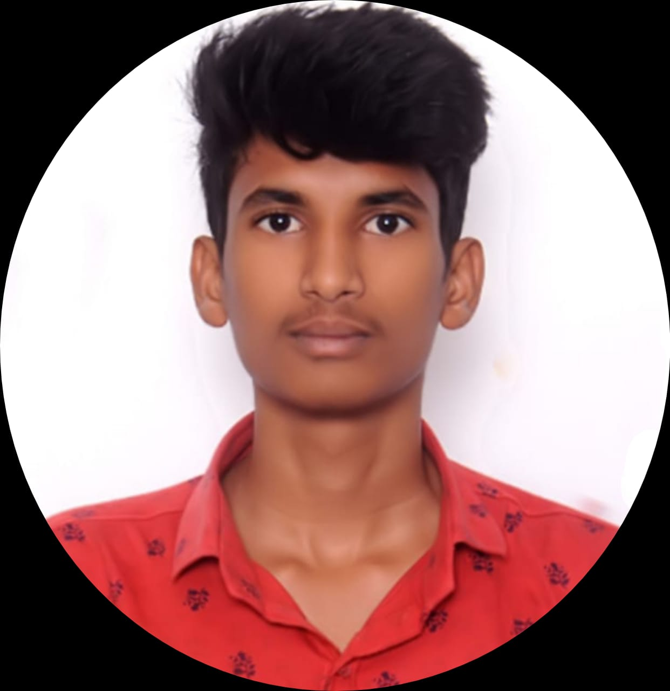

hey,Iam nithin
Iam a Frontend Developer &MentorI'm sanda nithin, and I'm looking for a job role in Full Stack Development. I have a bachelor's degree in Agriculture Engineering. However, I'm very passionate about learning new technologies, so I've decided to switch my career path into software industry.
I enjoy reading, and the knowledge and perspetive that my reading gives me have strengthened my teaching skills and presentation abilities
ABOUT
My name is Sanda Nithin, and iam currently looking for a job in FullStack Development/Frontend Development.I recently Completed my bachelor of Technology in Agricultural Engineering.As i'm much intrested in developing new things I started new journey as a FullStack Developer till now I have learnt HTML, CSS,Python, JavaScript,SQL,Bootstra and React JS. I have a bachelor's degree in Electronics and Communication. Peopel find me to be an upbeat, self-motivated team player with excellent Communication skills.
I am a dedicated person with a family of four.I enjoy reading, and the knowledge and prespective that my reading gives me have strengthened my teaching skills and presentation abilities.My name is Vamshikumar, and iam currently looking for a job in FullStack Development/Frontend Development.I recently Completed my bachelor of Technology in Agricultural Engineering.As i'm much intrested in developing new things I started new journey as a FullStack Developer till now I have learnt HTML, CSS,Python, JavaScript,SQL,Bootstra and React JS. I have a bachelor's degree in Electronics and Communication. Peopel find me to be an upbeat, self-motivated team player with excellent Communication skills.